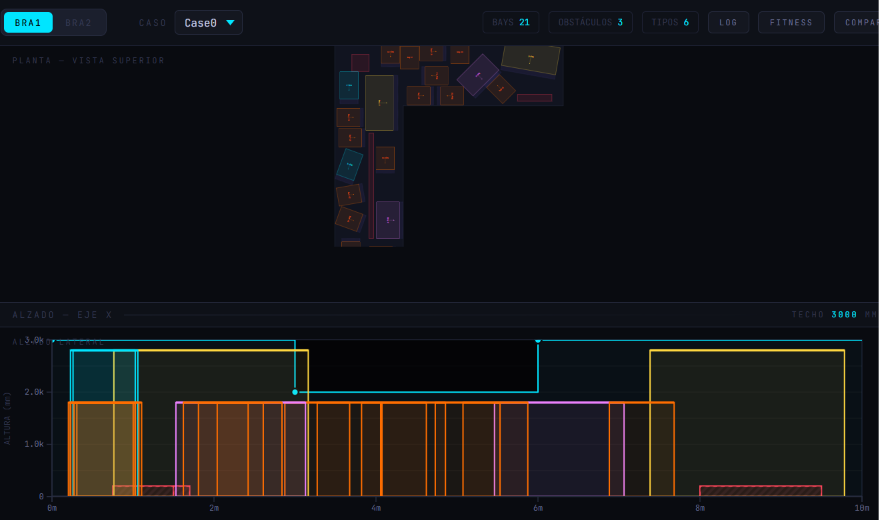

Mecalux Challenge — HackUPC 2026
Warehouse layout optimization using genetic algorithms and simulated annealing,
developed for the Mecalux Challenge at HackUPC 2026. Minimizes travel time and maximizes space efficiency
with a Flask web interface for real-time visualization and interactive control.
The system features
warehouse layout and constraint loading, configuration optimization using Genetic Algorithms (GA) and
Simulated Annealing (SA), and a web server with a REST API and browser UI for real-time visualization.